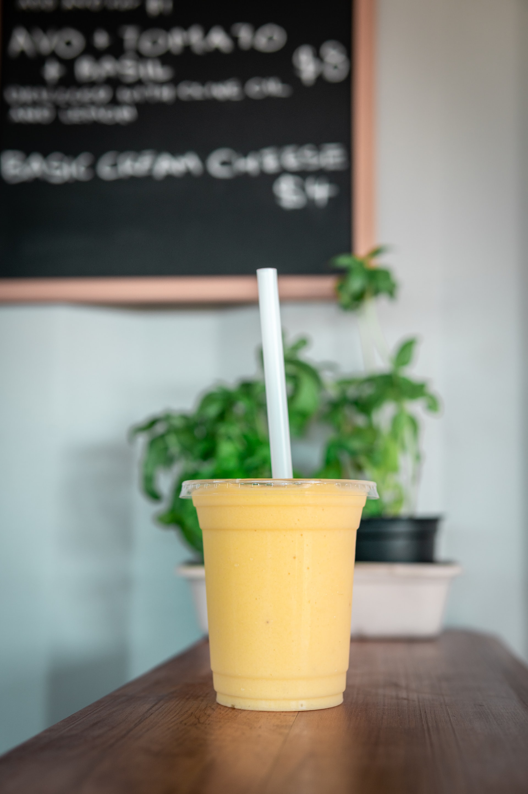

Any Berry Banana Smoothie

Description
A healthy berry banana smoothie packed with frozen berries,
banana, and creamy yogurt, that can be easily customized to your
favorite ingredients. Start with this base recipe then make it
dairy free, a green smoothie, or add chia seeds, flax oil, or
collagen for a nutritional boost!
Ingredients
- 8 oz plain or vanilla Greek yogurt
- 1 frozen banana, broken into chunks
- 1 cup berries (blueberries, blackberries, strawberries)
- 1 cup milk of choice
-
Optional add-ins: 2-3 tsp honey or maple syrup or 1 pitted
Medjool date
Steps
-
Place all ingredients in a high-speed blender and blend until
smooth and creamy, about a minute or two.
- Pour into glasses. Best enjoyed immediately.
HOME